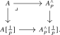
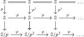
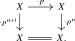
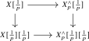
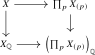
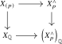
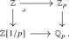

Beyond localizations, there is another important operation in algebra, known as \(p\)-completion for a prime \(p\). The process of \(p\)-completion is in some sense orthogonal to the process of inverting \(p\). For example, if \(A\) is a finitely generated abelian group and \(A^{\wedge }_p := \lim _n A/p^nA\) is its \(p\)-completion, then \(A\) can be recovered from its \(p\)-completion and its \(p\)-inversion via the arithmetic fracture square:1 a pullback square in \(\Ab \) of the form

The goal of this section is to construct an analogous \(p\)-completion operation on spectra, show that it is an instance of a Bousfield localization at some spectrum, compute the homotopy groups of a completion, and establish a spectral form of the arithmetic fracture square.
7.3.1 Completion as a Bousfield localization
Definition 7.3.1. Consider the mod \(p\) Moore spectrum \(\S /p\), defined as the cofiber \[ \S /p \quad := \quad \cofib (p\colon \S \to \S ). \] We refer to an \(\S /p\)-local spectrum as \(p\)-complete. We write \[ \Sp ^{\wedge }_p \subseteq \Sp \] for the full subcategory of \(p\)-complete spectra, and denote the resulting localization functor by \[ (-)^{\wedge }_p := L_{\S /p} \colon \Sp \to \Sp ^{\wedge }_p. \]
Observation 7.3.2. Note that \(X \otimes \S /p \simeq X/p\) for every \(X\). In particular, a spectrum \(X\) is \(\S /p\)-acyclic if and only if the map \(p\colon X \to X\) is an isomorphism, i.e. \(X\) is \(\S [\frac {1}{p}]\)-local by Lemma 7.2.8.
Warning 7.3.3. An \(\S [\frac {1}{p}]\)-local spectrum should not be confused with a \(p\)-local spectrum: in the former, multiplication by \(p\) is an isomorphism; in the latter, this holds for every prime other than \(p\). Moreover, unlike the prime-inversion localizations of the previous section, \(p\)-completion is not smashing in general.
We would like to get a more explicit description of \(p\)-completeness that makes its connection with \(p\)-completion in classical algebra clear.
Definition 7.3.4. We define the spectrum \(\S /p^{\infty }\) as the cofiber of the map \(\S \to \S [\frac {1}{p}]\): \[ \S /p^{\infty } \quad := \quad \cofib (\S \to \S [\frac {1}{p}] = \colim (\S \xrightarrow {\cdot p} \S \xrightarrow {\cdot p} \S \xrightarrow {\cdot p} \dots )). \] By writing \(\S \) as the colimit over the identity maps \(\S \xrightarrow {\id } \S \), we may alternatively write \(\S /p^{\infty }\) as the colimit over the bottom row of the following commutative diagram, where all vertical sequences are cofiber sequences:

(This also justifies the notation \(\S /p^{\infty }\).)
Theorem 7.3.5. For a spectrum \(X\), the map \[ X = \hom (\S ,X) \to \hom (\S /p^{\infty }[-1],X) \] induced by the map \(\S /p^{\infty }[-1] \to \S \) exhibits its target as a \(p\)-completion of \(X\), i.e. \[ X^{\wedge }_p \iso \hom (\S /p^{\infty }[-1],X) \iso \hom (\S /p^{\infty },X)[1]. \]
Proof. We have to show that \(\hom (\S /p^{\infty }[-1],X)\) is \(p\)-complete and that the map \(X \to \hom (\S /p^{\infty }[-1],X)\) is an \(\S /p\)-equivalence. For the latter, we may equivalently show that its fiber is \(\S /p\)-acyclic, or equivalently that its fiber is \(\S [\frac {1}{p}]\)-local by Observation 7.3.2. Because of the exact sequence \(\S /p^{\infty }[-1] \to \S \to \S [\frac {1}{p}]\), this fiber is isomorphic to \(\hom (\S [\frac {1}{p}],X)\). But this is clearly \(\S [\frac {1}{p}]\)-local: for any \(\S [\frac {1}{p}]\)-acyclic spectrum \(Y\) we have \(\hom (Y,\hom (\S [\frac {1}{p}],X)) \simeq \hom (Y \otimes \S [\frac {1}{p}],X) \simeq \hom (0,X) = 0\).
We will now show that \(\hom (\S /p^{\infty }[-1],X)\) is \(p\)-complete, i.e. \(\S /p\)-local. To this end, let \(A\) be an \(\S /p\)-acyclic spectrum, i.e. the map \(p\colon A \to A\) is an isomorphism. We need to show that \(0 = \hom (A,\hom (\S /p^{\infty }[-1],X)) \simeq \hom (A \otimes \S /p^{\infty }[-1],X)\). For this, it will suffice to show that \(A \otimes \S /p^{\infty } = 0\). Since we may write \(\S /p^{\infty }\) as a colimit of \(\S /p^n\), we may similarly write \[ A \otimes \S /p^{\infty } \simeq \colim _n(A \otimes \S /p^n) \simeq \colim _n(A/p^n). \] But as \(A\) is \(\S /p\)-acyclic, the map \(p\colon A\to A\) and hence also \(p^n\colon A \to A\) is an isomorphism, and so \(A/p^n = 0\). This shows that \(A \otimes \S /p^{\infty }\simeq 0\), as desired. □
As a corollary of the theorem, we may now describe the \(p\)-completion of \(X\) as a familiar limit:
Corollary 7.3.6. For a spectrum \(X\), its \(p\)-completion is given by the following limit: \[ X^{\wedge }_p \quad \simeq \quad \lim (\,\,\dots \to X/p^3 \to X/p^2 \to X/p). \]
Proof. The exact sequence \(\S /p^n[-1] \to \S \xrightarrow {\cdot p^n} \S \) induces an exact sequence \[ \hom (\S ,X) \xrightarrow {\cdot p^n} \hom (\S ,X) \to \hom (\S /p^n[-1], X). \] Since \(\hom (\S ,X) \simeq X\), it follows that \(\hom (\S /p^n[-1], X) \simeq X/p^n\) for all \(n\). Furthermore, under these isomorphisms the maps \(\S /p^n \xrightarrow {\cdot p} \S /p^{n+1}\) induce the canonical maps \(X/p^{n+1} \to X/p^n\), as these are the ones induced on vertical cofibers in the following commutative diagram:

Using Theorem 7.3.5, we may then compute that \begin {align*} X^{\wedge }_p \simeq {} & \hom (\S /p^{\infty }[-1],X) \simeq \hom (\colim _n \S /p^n[-1],X) \\ \simeq & \lim _n \hom (\S /p^n[-1],X) \simeq \lim _n X/p^n, \end {align*}
as desired. □
Proof. Since \(X\) is \(p\)-complete, the localization map \(X \to X^{\wedge }_p\) is an \(\S /p\)-equivalence between \(\S /p\)-local spectra, hence is an isomorphism by Lemma 7.1.6. By Corollary 7.3.6, we may therefore write \(X \cong \lim _n(X/p^n)\). Each \(X/p^n\) is \(p\)-local by Proposition 7.2.12. By Lemma 7.2.8, \(p\)-local spectra are \(\S [P^{-1}]\)-local for \(P\) the set of all primes different from \(p\), so they are closed under limits by Exercise 7.1.4. □
Corollary 7.3.8. Let \(p\) and \(q\) be two distinct primes. If \(X\) is both \(p\)-complete and \(q\)-complete, then \(X\) is the zero spectrum.
Proof. The \(q\)-completeness of \(X\) means that \(X\) is \(\S /q\)-local. The \(p\)-completeness of \(X\) implies, via Corollary 7.3.7, that the map \(q\colon X \to X\) is an isomorphism, hence that \(X\) is \(\S /q\)-acyclic. It then follows from Lemma 7.1.6 that \(X = 0\). □
7.3.2 Homotopy groups of a \(p\)-completion
The inverse limit formula \(X_p^{\wedge }\simeq \lim _k X/p^k\) does not immediately compute the homotopy groups of the \(p\)-completion, since homotopy groups need not preserve inverse limits. Instead, we use the mapping spectrum formula of Theorem 7.3.5. The telescope construction will give a resolution of \(\S /p^{\infty }\) by direct sums of spheres which realizes a free resolution of the Prüfer group \(\Z /p^{\infty }:=\Z [\frac {1}{p}]/\Z \). After applying \(\hom (-,X)\), the resulting long exact sequence computes \(\pi _*(X_p^{\wedge })\) in terms of \(\Hom \) and \(\Ext \).
Accordingly, for an abelian group \(A\) we write \[ L_0^p A := \Ext ^1_{\Z }(\Z /p^{\infty },A) \qquad \text {and}\qquad L_1^p A := \Hom _{\Z }(\Z /p^{\infty },A) \] for its two derived \(p\)-completion groups. Throughout this subsection we write \(\Z _p := \lim _k \Z /p^k\), with respect to the quotient maps, for the ring of \(p\)-adic integers. We first record a useful calculation.
Lemma 7.3.9. Let \(A\) be an abelian group, and write \(A[p^k] \subseteq A\) for the subgroup of elements annihilated by \(p^k\). Then \[ \begin {gathered} L_1^p A \cong \lim _k A[p^k], \\[2pt] 0 \longrightarrow \lim _k^1 A[p^k] \longrightarrow L_0^p A \longrightarrow \lim _k A/p^k A \longrightarrow 0, \end {gathered} \] where the transition maps on \(A[p^k]\) are multiplication by \(p\). If \(A\) is finitely generated, then \(L_1^p A = 0\) and \(L_0^p A \cong A \otimes _{\Z } \Z _p\).
Proof. Write \(\Z /p^{\infty } \cong \colim _k \Z /p^k\) for the filtered colimit along the multiplication-by-\(p\) injections \(\Z /p^k \xrightarrow {\ \cdot p\ } \Z /p^{k+1}\). Since filtered colimits are exact in \(\Ab \), the colimit in \(\D (\Z )\) of a filtered diagram of abelian groups concentrated in degree zero is again concentrated in degree zero, with degree-zero homology given by the colimit in \(\Ab \). Thus the displayed colimit also computes the colimit in \(\D (\Z )\). Mapping out of it gives \[ \hom _{\D (\Z )}(\Z /p^{\infty },A) \simeq \lim _k \hom _{\D (\Z )}(\Z /p^k,A). \] For every \(k \geq 1\), the standard resolution of \(\Z /p^k\) identifies \[ \Hom _{\Z }(\Z /p^k,A) \cong A[p^k] \qquad \text {and}\qquad \Ext ^1_{\Z }(\Z /p^k,A) \cong A/p^k A. \] Under these identifications, the transition maps are multiplication by \(p\) on the first tower and the quotient maps on the second. The two claims now follow by applying the Milnor sequence of Corollary 4.4.36 in degrees \(0\) and \(-1\).
If \(A\) is finitely generated, its \(p\)-primary torsion is bounded, so the transition maps into every fixed stage of the first tower are eventually zero. It follows directly from the description in Definition 4.4.35 that both its limit and its first derived limit vanish. Finally, \(\lim _k A/p^k A \cong A \otimes _{\Z } \Z _p\) for every finitely generated abelian group \(A\). □
Theorem 7.3.10 (Homotopy groups of a \(p\)-completion). Let \(p\) be a prime and let \(X\) be a spectrum. Then for every \(n \in \Z \) there is a natural short exact sequence \[ 0 \to \Ext ^1_{\Z }(\Z /p^{\infty }, \pi _n X) \to \pi _n(X^{\wedge }_p) \to \Hom _{\Z }(\Z /p^{\infty }, \pi _{n-1} X) \to 0. \]
Proof. Let \(F := \bigoplus _{k \geq 0}\S \), with summand inclusions \(\iota _k\colon \S \to F\). Splicing the telescope sequence for \(\S [\frac {1}{p}]\) from Lemma 4.4.33 with the defining exact sequence \(\S \to \S [\frac {1}{p}] \to \S /p^{\infty }\), and then reindexing the source, gives an exact sequence \[ F \xrightarrow {\ d\ } F \longrightarrow \S /p^{\infty }, \] where \(d \circ \iota _0 = \iota _0\) and \(d \circ \iota _{k+1} = \iota _k-p\iota _{k+1}\) for \(k \geq 0\). On \(\pi _0\) this realizes the free resolution \[ 0 \longrightarrow \bigoplus _{k \geq 0}\Z \xrightarrow {\ d_*\ } \bigoplus _{k \geq 0}\Z \longrightarrow \Z /p^{\infty } \longrightarrow 0, \] in which the \(k\)-th basis vector of the middle group maps to \(p^{-k}+\Z \). Thus the exact sequence of spectra is obtained by realizing this free resolution by direct sums of spheres.
Apply \(\hom (-,X)\) to the exact sequence above. For every \(m \in \Z \), the universal property of the coproduct identifies \[ \pi _m\hom (F,X) \cong \Hom _{\Z }\Big (\bigoplus _{k \geq 0}\Z ,\pi _m X\Big ), \] and the map induced by \(d\) agrees with precomposition by \(d_*\). By Theorem 7.3.5, we have \(X_p^{\wedge } \simeq \hom (\S /p^{\infty },X)[1]\), so that \(\pi _n(X_p^{\wedge }) \cong \pi _{n-1}\hom (\S /p^{\infty },X)\). Write \(d_m^*\) for the endomorphism induced by \(d^*\) on \(\pi _m\hom (F,X)\). The long exact sequence associated to the exact sequence \(\hom (\S /p^{\infty },X) \to \hom (F,X) \xrightarrow {d^*} \hom (F,X)\) then gives a short exact sequence \[ 0 \to \coker (d_n^*) \to \pi _n(X_p^{\wedge }) \to \ker (d_{n-1}^*) \to 0. \] By Proposition 6.4.14, its outer terms are \[ \Ext ^1_{\Z }(\Z /p^{\infty },\pi _n X) = L_0^p(\pi _n X) \qquad \text {and}\qquad \Hom _{\Z }(\Z /p^{\infty },\pi _{n-1}X) = L_1^p(\pi _{n-1}X), \] respectively. This gives the asserted short exact sequence. □
Corollary 7.3.11. Let \(X\) be a spectrum and let \(n \in \Z \) be such that \(\pi _n(X)\) and \(\pi _{n-1}(X)\) are finitely generated. Then there is an isomorphism \[ \pi _n(X^{\wedge }_p) \; \cong \; \pi _n(X) \otimes _{\Z } \Z _p. \]
Proof. By Lemma 7.3.9, the right-hand term of the short exact sequence of Theorem 7.3.10 vanishes, while its left-hand term is \(\pi _n(X) \otimes _{\Z } \Z _p\). □
Example 7.3.12. All homotopy groups of the sphere spectrum are finitely generated: this is \(\pi _0(\S ) = \Z \) together with the finiteness theorem of Serre (1953) used in the proof of Theorem 7.2.14. Applying Corollary 7.3.11, we obtain \(\pi _0(\S ^{\wedge }_p) \cong \Z _p\), while for \(n \neq 0\) the group \(\pi _n(\S ^{\wedge }_p) \cong \pi _n(\S ) \otimes _{\Z } \Z _p\) is the \(p\)-primary part of the stable stem \(\pi _n(\S )\). Completing at \(p\) thus discards precisely the prime-to-\(p\) information in the stable stems.
Warning 7.3.13. The group \(L_1^p A\) detects compatible systems of \(p\)-power torsion, and it need not vanish. For example, let \(X := H(\Z /p^{\infty })\). Since the Prüfer group is injective, \(L_0^p(\Z /p^{\infty })=0\), whereas Lemma 7.3.9 gives \(L_1^p(\Z /p^{\infty }) \cong \Z _p\). Hence \[ X^{\wedge }_p \; \simeq \; H(\Z _p)[1]. \] This example in particular shows that completion is not computed degreewise on homotopy groups: the \(p\)-completion of a nonzero spectrum concentrated in degree \(0\) may be concentrated in degree \(1\).
7.3.3 The arithmetic fracture square
We now return to the interaction between \(p\)-completion and inversion of \(p\), and prove the spectral form of the arithmetic fracture square announced at the start of this section.
Lemma 7.3.14. Let \(P\) be a set of primes and let \(X\) be a spectrum satisfying \(X[P^{-1}] = 0\) and \(X/p = 0\) for every \(p \in P\). Then \(X = 0\).
Proof. For every \(p\in P\), the condition \(X/p=0\) means that multiplication by \(p\) on \(X\) is an isomorphism. Thus \(X\) is \(P\)-divisible, hence \(\S [P^{-1}]\)-local by Lemma 7.2.8. On the other hand, the isomorphism \(X[P^{-1}] \cong X\otimes \S [P^{-1}]\) shows that \(X\) is \(\S [P^{-1}]\)-acyclic. It follows from Lemma 7.1.6 that \(X = 0\). □
Theorem 7.3.15 (The \(p\)-adic arithmetic fracture square). Let \(X\) be a spectrum. Then the following commutative square is a pullback square:
Proof. We have to show that the map \(X \to X[\frac {1}{p}] \times _{X^{\wedge }_p[\frac {1}{p}]} X^{\wedge }_p\) is an isomorphism, or equivalently that its fiber \(F\) is the zero spectrum. Note that \(F[\frac {1}{p}] = 0\), since the square

is a pullback square (as the two vertical maps are isomorphisms). We claim that also \(F/p = 0\), so that \(F = 0\) by Lemma 7.3.14, applied with \(P=\{p\}\). To see this, we need to show that the commutative square
is a pullback square. The two objects at the bottom are zero, since the maps \(p\colon X[\frac {1}{p}] \to X[\frac {1}{p}]\) and \(p\colon X^{\wedge }_p[\frac {1}{p}] \to X^{\wedge }_p[\frac {1}{p}]\) are isomorphisms by Corollary 7.2.5. In particular the bottom map is an isomorphism. But the top map is also an isomorphism, since the map \(X \to X^{\wedge }_p\) is by definition an \(\S /p\)-equivalence. This finishes the proof. □
Exercise 7.3.16 (Arithmetic fracture square). Show that for every spectrum \(X\), the commutative squares


are pullback squares. In the first two squares, the products are taken over all prime numbers \(p\); the third square is asserted for every prime \(p\).
Hint: in each case, apply Lemma 7.3.14 to the fiber of the comparison map, taking \(P\) to be the set of all primes.
Exercises
Exercise 7.1. Let \(E\) and \(F\) be spectra. Show that the following two conditions are equivalent:
- (1)
-
Every \(E\)-acyclic spectrum \(X\) is also \(F\)-acyclic;
- (2)
-
Every \(F\)-local spectrum \(Y\) is also \(E\)-local.
Remark. Two spectra \(E\) and \(F\) are said to have the same Bousfield class if a spectrum \(X\) is \(E\)-acyclic if and only if it is \(F\)-acyclic. By the previous exercise, \(E\) and \(F\) have the same Bousfield class if and only if the subcategories \(\Sp _E \subseteq \Sp \) and \(\Sp _F \subseteq \Sp \) agree.
Exercise 7.2. Let \(X \in \Sp _{\Q }\) be a rational spectrum. Assume that \(X\) is \(p\)-complete for some prime \(p\). Show that \(X\) is the zero spectrum.
Exercise 7.3. Let \(E\), \(F\) and \(X\) be spectra. Is it always true that there is an isomorphism \(L_EL_FX \cong L_FL_EX\)? If yes, provide a proof. If no, provide a counterexample.
Exercise 7.4 (Arithmetic localization of Eilenberg–MacLane spectra). Let \(A\) be an abelian group and let \(P\) be a set of primes. Prove that \[ (HA)[P^{-1}]\cong H(A[P^{-1}]). \]
Exercise 7.5 (Completion of basic Eilenberg–MacLane spectra). Fix a prime \(p\). Compute the homotopy groups of \((H\Z )^{\wedge }_p\) and \((H\Z /p^r)^{\wedge }_p\). Deduce isomorphisms \[ (H\Z )^{\wedge }_p\cong H(\Z _p) \qquad \text {and}\qquad (H\Z /p^r)^{\wedge }_p\cong H\Z /p^r. \]
Exercise 7.6 (Reconstructing the integers). Write \(\Q _p:=\Z _p[1/p]\). Determine the \(p\)-adic arithmetic fracture square of \(H\Z \) and show that it is the Eilenberg–MacLane image of the pullback square of abelian groups

Verify the pullback assertion directly inside \(\Q _p\).
Notes
Generated from the authoritative LaTeX source.